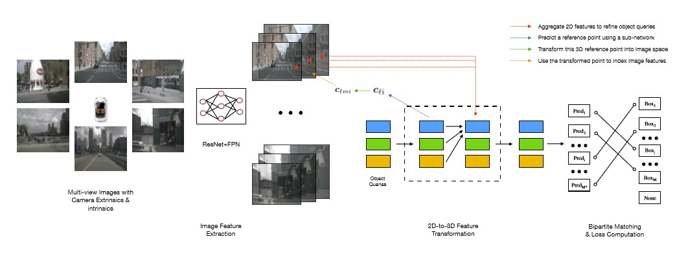
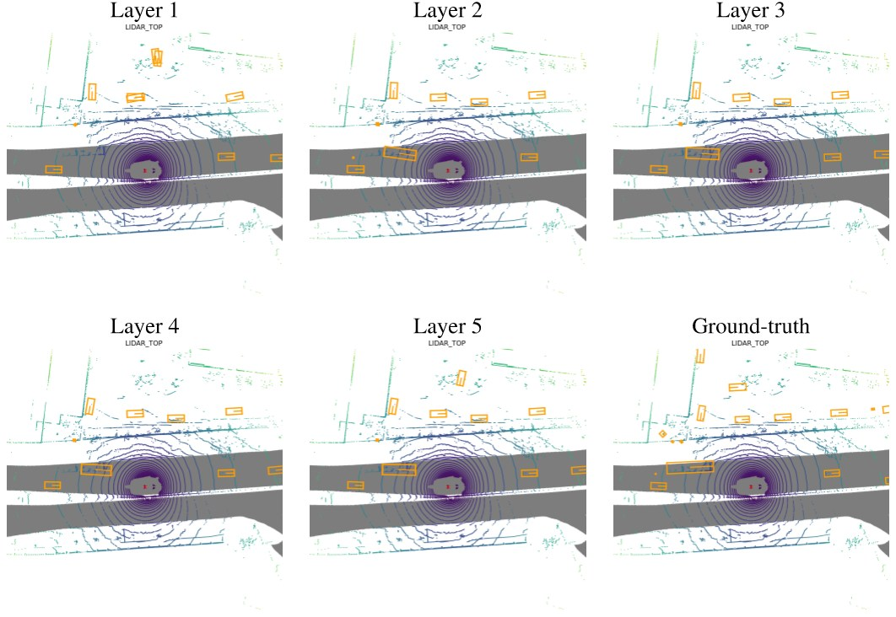
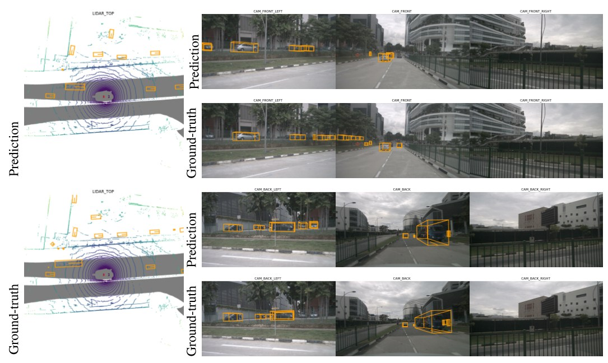

Yue Wang（Massachusetts Institute of Technology、yuewang@csail.mit.edu）、Vitor Guizilini*（Toyota Research Institute、vitor.guizilini@tri.global）、Tianyuan Zhang*（Carnegie Mellon University、tianyuaz@andrew.cmu.edu）、Yilun Wang（Li Auto、yilunw@cs.stanford.edu）、Hang Zhao ¶（Tsinghua University、hangzhao@mail.tsinghua.edu.cn）、Justin Solomon ¶（Massachusetts Institute of Technology、jsolomon@mit.edu）
*：同等の貢献。¶：本プロジェクトの共同指導。
arXiv:2110.06922v1 [cs.CV]、2021年10月13日
翻訳について：原文 PDF は
06_DETR3D_2110.06922.pdf（全 12 ページ）。本文、図の説明、図中ラベル、表、脚注、付録を訳出し、論文タイトルと参考文献は原文のまま掲載。図は原図を掲載し、英語ラベルの日本語訳を併記した。数式・数値・引用番号・コードの識別子は原文を維持。原文の記述に関する補足は「訳注」と明示し、本文と区別している。
本論文では、マルチカメラによる 3D 物体検出のためのフレームワークを提案する。単眼画像から 3D バウンディングボックスを直接推定したり、深度予測ネットワークを用いて 2D 情報から 3D 物体検出の入力を生成したりする既存研究とは対照的に、本手法は予測を 3D 空間内で直接操作する。本アーキテクチャは複数のカメラ画像から 2D 特徴を抽出し、次に疎な 3D 物体クエリの集合を用いてこれらの 2D 特徴を索引付けし、カメラ変換行列を用いて 3D 位置を多視点画像に結び付ける。最後に、本モデルは物体クエリごとにバウンディングボックスを予測し、正解と予測の食い違いを集合対集合損失（set-to-set loss）で測る。このトップダウン方式は、ピクセルごとの深度推定の後に物体のバウンディングボックス予測を行うボトムアップ方式よりも優れた性能を示す。これは、深度予測モデルがもたらす誤差の累積に悩まされないためである。さらに、本手法は非最大値抑制のような後処理を必要とせず、推論速度を大幅に向上させる。本手法は nuScenes 自動運転ベンチマークにおいて最先端の性能を達成する。
視覚情報からの 3D 物体検出は、低コストな自動運転システムにとって長年の課題である。LiDAR のようなモダリティで収集された点群からの物体検出は、可視物体の 3D 構造に関する情報の恩恵を受けられるが、カメラベースの設定はさらに不良設定である。RGB 画像に含まれる 2D 情報のみから 3D バウンディングボックスの予測を生成しなければならないからである。
既存の手法［1, 2］は通常、検出パイプラインを純粋に 2D の計算から構築する。すなわち、2D タスク向けに設計された物体検出パイプライン（例えば CenterNet［1］、FCOS［3］）を用いて、物体の姿勢や速度といった 3D 情報を、3D シーン構造やセンサ構成を考慮せずに予測する。これらの手法は、カメラ間で予測を融合し冗長なボックスを除去するためにいくつかの後処理ステップを必要とし、効率と有効性の間に急峻なトレードオフを生じる。これらの 2D ベースの手法に代わるものとして、［4, 5, 6］のような 3D 再構成手法を適用してカメラ画像からシーンの疑似 LiDAR（pseudo-LiDAR）や距離画像入力を作成することで、物体検出パイプラインにより多くの 3D 計算を取り込む手法もある。そうすれば、そのデータがあたかも 3D センサから直接収集されたかのように 3D 物体検出手法を適用できる。しかしこの戦略は誤差の累積［7］を被る。推定精度の低い深度値は 3D 物体検出の性能に強い悪影響を与え、3D 物体検出自体もまた独自の誤差を示しうる。
本論文では、自動運転のための 2D 観測と 3D 予測の間の、より洗練された橋渡しを提案する。これは密な深度予測のためのモジュールに依存しない。DETR3D（Multi-View 3D Detection）と名付けた本フレームワークは、この問題にトップダウン方式で取り組む。本手法は、カメラ変換行列を用いた幾何学的逆投影によって 2D 特徴抽出と 3D 物体予測を結び付ける。本手法は、データセット全体で共有され、エンドツーエンドで学習される疎な物体事前情報（object prior）の集合から出発する。シーン固有の情報を集めるために、これらの物体事前情報からデコードされた参照点の集合を各カメラに逆投影し、ResNet バックボーン［8］によって抽出された対応する画像特徴を取得する。参照点の画像特徴から集められた特徴は、次にマルチヘッド自己注意層［9］を通じて互いに相互作用する。一連の自己注意層の後、すべての層からバウンディングボックスのパラメータを読み出し、DETR［10］に着想を得た集合対集合損失を用いて性能を評価する。
本アーキテクチャは、点群の再構成や画像からの明示的な深度予測を行わないため、深度推定の誤差に対して頑健である。さらに、本手法は非最大値抑制（NMS）のようないかなる後処理も必要とせず、効率を改善し、出力を整理するための人手で設計された手法への依存を減らす。nuScenes データセットにおいて、本手法（NMS なし）は先行研究（NMS あり）と同等である。カメラの重複領域では、本手法は他の手法を大幅に上回る。
貢献。主要な貢献を以下にまとめる。
2D 物体検出。RCNN［12］は深層学習を用いた物体検出の先駆けとなった。これは事前に選択された物体候補（object proposal）の集合を畳み込みニューラルネットワーク（CNN）に入力し、それに応じてバウンディングボックスのパラメータを予測する。この手法は驚くべき性能を示すものの、物体候補ごとに ConvNet の順伝播を行うため、他の手法より 1 桁遅い。この問題を解決するため、Fast RCNN［13］は画像全体を 1 回の順伝播で処理する共有の学習可能な CNN を導入した。性能と速度をさらに改善するため、Faster RCNN［13］は画像全体の畳み込み特徴を検出ネットワークと共有する領域提案ネットワーク（RPN）を組み込み、ほぼコストのかからない領域提案を可能にした。Mask RCNN［14］はマスク予測の分岐を組み込み、インスタンスセグメンテーションを並行して行えるようにした。これらの手法は通常、多段階の精緻化を伴い、実用上は低速になりうる。これらの多段階手法とは異なり、SSD［15］と YOLO［16］は密な予測を 1 回のショットで行う。これらは上記の手法より大幅に高速であるが、依然として冗長なボックス予測を除去するために NMS に依存している。これらの手法は、事前定義されたアンカーに対してバウンディングボックスを予測する。CenterNet［1］と FCOS［3］は、アンカーごとの予測からピクセルごとの予測へと移行することでパラダイムを変え、一般的な物体検出パイプラインを大幅に簡素化した。
集合ベースの物体検出。DETR［10］は物体検出を集合対集合の問題として定式化する。これは Transformer［9］を用いて特徴と物体の相互作用を捉える。DETR は予測を正解ボックスの集合に割り当てることを学習するため、冗長なボックスを除去するための後処理を必要としない。しかし DETR の重大な欠点の一つは、相当な学習時間を要することである。Deformable DETR［17］は DETR の収束の遅さを分析し、特徴を局所化して学習を加速する変形可能自己注意モジュールを提案した。同時期に、［18］は DETR の収束の遅さを集合ベースの損失と Transformer のクロス注意機構に帰した。彼らはこれらの問題点を克服するため、TSP-FCOS と TSP-RCNN の 2 つの変種を提案した。SparseR-CNN［19］は集合予測を RCNN 型のパイプラインに組み込み、NMS なしで多段階物体検出を上回る性能を示した。OneNet［20］は興味深い現象を調べた。すなわち、密な予測に基づく物体検出器は、最小コストの集合損失を備えれば NMS 不要にできるというものである。3D の領域では、Object DGCNN［11］が点群からの 3D 物体検出を研究している。これは 3D 物体検出を動的グラフ上のメッセージパッシングとしてモデル化し、DGCNN のフレームワークを物体の集合の予測へと一般化したものである。DETR と同様に、Object DGCNN も NMS 不要である。

図1：本手法の概要。モデルへの入力は多視点画像の集合であり、ResNet と FPN によってエンコードされる。次に、本モデルは疎な物体クエリの集合に対して処理を行い、各クエリは 3D 参照点にデコードされる。3D 参照点を画像空間に投影することで 2D 特徴が変換され、物体クエリを精緻化する。本モデルはクエリごとに予測を行い、集合対集合損失を用いる。
図中ラベル：Multi-view Images with Camera Extrinsics & intrinsics＝カメラ外部・内部パラメータ付きの多視点画像、Image Feature Extraction＝画像特徴抽出、Object Queries＝物体クエリ、2D-to-3D Feature Transformation＝2D から 3D への特徴変換、Bipartite Matching & Loss Computation＝二部マッチングと損失計算、Pred＝予測、Box＝ボックス、None＝なし（対象なし）。凡例：赤点線＝2D 特徴を集約して物体クエリを精緻化する、青点線＝サブネットワークを用いて参照点を予測する、緑点線＝この 3D 参照点を画像空間に変換する、橙点線＝変換された点を用いて画像特徴を索引付けする
単眼 3D 物体検出。RGB 画像からの 3D 検出の初期の手法は Mono3D［21］であり、学習時にシーンの制約と追加の事前情報を用いながら、意味的手がかりと形状の手がかりを使って 3D 候補の集まりから選択する。［22］は単眼 3D 検出に鳥瞰図（BEV）を用い、［23］は 2D–3D 投影誤差の最小化を通じて 2D 検出を 3D バウンディングボックス回帰に活用する。3D 計算の出発点として 2D 検出器を用いることは、近年では標準的なアプローチとなっている［24, 25］。他の研究では、最先端の 3D 物体検出性能を実現するために、微分可能レンダリング［26］や 3D キーポイント検出［27, 28, 1］の進展も探求されている。これらの手法はすべて単眼の設定で動作し、複数カメラへの拡張は、各フレームを独立に処理した後に後処理段階で出力を統合することによって行われる。
本アーキテクチャは、射影行列（内部パラメータと相対的な外部パラメータの組み合わせ）が既知であるカメラの集合から収集された RGB 画像を入力とし、シーン内の物体に対する 3D バウンディングボックスのパラメータの集合を出力する。過去のアプローチとは対照的に、本アーキテクチャはいくつかの高レベルな要件に基づいて構築される。
これらの要件に、新たな集合予測モジュールを用いて対処する。このモジュールは 2D と 3D の計算を交互に行うことで、2D 特徴抽出と 3D ボックス予測を結び付ける。本モデルは図1に示す 3 つの重要な構成要素を含む。第一に、2D ビジョンにおける一般的な慣行に従い、共有の ResNet［8］バックボーンを用いてカメラ画像から特徴を抽出する。任意で、これらの特徴は特徴ピラミッドネットワーク（FPN）［29］によって強化される（§3.2）。第二に、検出ヘッド（§3.3）――本論文の主要な貢献――が、計算された 2D 特徴を幾何学を考慮した方法で 3D バウンディングボックス予測の集合に結び付ける（§3.3）。検出ヘッドの各層は、データから学習された疎な物体クエリの集合から出発する。各物体クエリは 3D 位置をエンコードしており、それがカメラ平面に投影され、双線形補間によって画像特徴を集めるために用いられる。次に、DETR［10］と同様に、マルチヘッド注意［9］を用いて物体間の相互作用を取り込むことで物体クエリを精緻化する。この層は複数回繰り返され、特徴サンプリングと物体クエリの精緻化を交互に行う。最後に、集合対集合損失［30, 10］を評価してネットワークを学習する（§3.4）。
本モデルは、画像の集合 \( \mathcal{I} = \{\mathbf{im}_1, \ldots, \mathbf{im}_K\} \subset \mathbb{R}^{\mathrm{H_{im}} \times \mathrm{W_{im}} \times 3} \)（周囲のカメラで撮影されたもの）、カメラ行列 \( \mathcal{T} = \{T_1, \ldots, T_K\} \subset \mathbb{R}^{3 \times 4} \)、正解バウンディングボックス \( \mathcal{B} = \{\boldsymbol{b}_1, \ldots, \boldsymbol{b}_j, \ldots, \boldsymbol{b}_M\} \subset \mathbb{R}^9 \)、およびカテゴリラベル \( \mathcal{C} = \{c_1, \ldots, c_j, \ldots, c_M\} \subset \mathbb{Z} \) から出発する。各 \( \boldsymbol{b}_j \) は鳥瞰図（BEV）における位置、サイズ、方位角、速度を含む。本モデルは、これらの画像からこれらのボックスとそのラベルを予測することを目指す。通常は高価な LiDAR で取得される点群は使用しない。
これらの画像は ResNet［8］と FPN［29］によって 4 つの特徴の集合 \( \mathcal{F}_1, \mathcal{F}_2, \mathcal{F}_3, \mathcal{F}_4 \) にエンコードされる。各集合 \( \mathcal{F}_k = \{\boldsymbol{f}_{k1}, \ldots, \boldsymbol{f}_{k6}\} \subset \mathbb{R}^{H \times W \times C} \) は 6 枚の画像の特徴のある一つのレベルに対応する。これらのマルチスケール特徴は、さまざまなサイズの物体を認識するための豊富な情報を提供する。次に、新たな集合予測モジュールを用いてこれらの 2D 特徴を 3D に変換する本アプローチを詳述する。
カメラ入力から物体を検出する既存の手法は通常ボトムアップ方式を採用しており、画像ごとに密なバウンディングボックスの集合を予測し、画像間で冗長なボックスを除去し、後処理ステップでカメラ間の予測を集約する。このパラダイムには 2 つの重大な欠点がある。密なバウンディングボックス予測には正確な深度知覚が必要であり、それ自体が困難な問題であること、そして NMS ベースの冗長性除去と集約は並列化できない操作であり、推論に大きなオーバーヘッドをもたらすことである。これらの問題に、以下で説明するトップダウン型の物体検出ヘッドを用いて対処する。
［11, 17］と同様に、DETR3D は反復的であり、集合ベースの計算を行う \( L \) 個の層を用いて 2D 特徴マップからバウンディングボックスの推定値を生成する。各層は以下のステップを含む。
DETR［10］に動機付けられ、各層 \( \ell \in \{0, \ldots, L-1\} \) は物体クエリの集合 \( \mathcal{Q}_\ell = \{\boldsymbol{q}_{\ell 1}, \ldots, \boldsymbol{q}_{\ell M^*}\} \subset \mathbb{R}^C \) に対して処理を行い、新たな集合 \( \mathcal{Q}_{\ell+1} \) を生成する。参照点 \( \boldsymbol{c}_{\ell i} \in \mathbb{R}^3 \) は物体クエリ \( \boldsymbol{q}_{\ell i} \) から次のようにデコードされる。
\[ \boldsymbol{c}_{\ell i} = \Phi^{\mathrm{ref}}(\boldsymbol{q}_{\ell i}), \tag{1} \]
ここで \( \Phi^{\mathrm{ref}} \) はニューラルネットワークである。\( \boldsymbol{c}_{\ell i} \) は \( i \) 番目のボックスの中心に関する仮説とみなせる。次に、最終的なバウンディングボックスを精緻化・予測するために、\( \boldsymbol{c}_{\ell i} \) に対応する画像特徴を取得する。そして、\( \boldsymbol{c}_{\ell i} \)（より正確にはその同次座標表現 \( \boldsymbol{c}^*_{\ell i} \)）を、カメラ変換行列を用いて各画像に投影する。
\[ \boldsymbol{c}^*_{\ell i} = \boldsymbol{c}_{\ell i} \oplus 1 \qquad \boldsymbol{c}_{\ell m i} = T_m \boldsymbol{c}^*_{\ell i}, \tag{2} \]
ここで \( \oplus \) は連結を表し、\( \boldsymbol{c}_{\ell m i} \) は参照点の \( m \) 番目のカメラへの投影である。特徴マップのサイズの影響を除き、異なるレベル間で特徴を集めるために、\( \boldsymbol{c}_{\ell m i} \) を \( [-1, 1] \) に正規化する。次に、画像特徴は次のように集められる。
\[ \boldsymbol{f}_{\ell k m i} = f^{\mathrm{bilinear}}(\mathcal{F}_{km}, \boldsymbol{c}_{\ell m i}), \tag{3} \]
ここで \( \boldsymbol{f}_{\ell k m i} \) は、\( \ell \) 番目の層における \( m \) 番目のカメラの \( k \) 番目のレベルから得られる \( i \) 番目の点の特徴である。
ある参照点が必ずしもすべてのカメラ画像で可視であるとは限らないため、無効な点を除外するための何らかのヒューリスティックが必要である。そのために、参照点が画像平面の外側に投影されるかどうかに基づいて決定される二値 \( \sigma_{\ell k m i} \) を定義する。最終的な特徴 \( \boldsymbol{f}_{\ell i} \) と次の層の物体クエリ \( \boldsymbol{q}_{(\ell+1)i} \) は次式で与えられる。
\[ \boldsymbol{f}_{\ell i} = \frac{1}{\sum_k \sum_m \sigma_{\ell k m i} + \epsilon} \sum_k \sum_m \boldsymbol{f}_{\ell k m i} \sigma_{\ell k m i} \quad \text{and} \quad \boldsymbol{q}_{(\ell+1)i} = \boldsymbol{f}_{\ell i} + \boldsymbol{q}_{\ell i}, \tag{4} \]
ここで \( \epsilon \) はゼロ除算を避けるための小さな数である。最後に、各物体クエリ \( \boldsymbol{q}_{\ell i} \) に対して、2 つのニューラルネットワーク \( \Phi^{\mathrm{reg}}_\ell \) と \( \Phi^{\mathrm{cls}}_\ell \) を用いて、バウンディングボックス \( \hat{\boldsymbol{b}}_{\ell i} \) とそのカテゴリラベル \( \hat{c}_{\ell i} \) を予測する。
\[ \hat{\boldsymbol{b}}_{\ell i} = \Phi^{\mathrm{reg}}_\ell(\boldsymbol{q}_{\ell i}) \quad \text{and} \quad \hat{c}_{\ell i} = \Phi^{\mathrm{cls}}_\ell(\boldsymbol{q}_{\ell i}). \tag{5} \]
学習中は、すべての層からの予測 \( \hat{\mathcal{B}}_\ell = \{\hat{\boldsymbol{b}}_{\ell 1}, \ldots, \hat{\boldsymbol{b}}_{\ell j}, \ldots, \hat{\boldsymbol{b}}_{\ell M^*}\} \subset \mathbb{R}^9 \) および \( \hat{\mathcal{C}}_\ell = \{\hat{c}_{\ell 1}, \ldots, \hat{c}_{\ell j}, \ldots, \hat{c}_{\ell M}\} \subset \mathbb{Z} \) に対して損失を計算する。推論時には、最後の層からの出力のみを用いる。（訳注：\( \hat{\mathcal{C}}_\ell \) の最後の添え字は原文では \( M \) だが、予測数に合わせるなら \( M^* \) と考えられる。）
［30, 10］に従い、予測集合 \( (\hat{\mathcal{B}}_\ell, \hat{\mathcal{C}}_\ell) \) と正解集合 \( (\mathcal{B}, \mathcal{C}) \) の食い違いを測るために集合対集合損失を用いる。この損失は 2 つの部分からなる。クラスラベルに対する focal loss［31］と、バウンディングボックスのパラメータに対する \( L^1 \) 損失である。表記の簡便のため、\( \hat{\mathcal{B}}_\ell \) と \( \hat{\mathcal{C}}_\ell \) の添え字 \( \ell \) を省略する。正解ボックスの数 \( M \) は通常、予測の数 \( M^* \) より小さいため、計算を容易にするために正解ボックスの集合を \( \varnothing \)（物体なし）で \( M^* \) 個まで埋める。正解と予測の対応付けは、二部マッチング問題 \( \sigma^* = \arg\min_{\sigma \in \mathcal{P}} \sum_{j=1}^{M} -1_{\{c_j \neq \varnothing\}} \hat{p}_{\sigma(j)}(c_j) + 1_{\{c_j = \varnothing\}} \mathcal{L}_{\mathrm{box}}(\boldsymbol{b}_j, \hat{\boldsymbol{b}}_{\sigma(j)}) \) によって確立する。ここで \( \mathcal{P} \) は置換の集合を表し、\( \hat{p}_{\sigma(j)}(c_j) \) はインデックス \( \sigma(j) \) の予測がクラス \( c_j \) である確率、\( \mathcal{L}_{\mathrm{box}} \) はバウンディングボックスのパラメータに対する \( L_1 \) 損失である。［30, 10］と同様に、この割り当て問題を解くためにハンガリアンアルゴリズム［32］を用い、集合対集合損失 \( \mathcal{L}_{\mathrm{sup}} = \sum_{j=1}^{N} -\log \hat{p}_{\sigma^*(j)}(c_j) + 1_{\{c_j = \varnothing\}} \mathcal{L}_{\mathrm{box}}(\boldsymbol{b}_j, \hat{\boldsymbol{b}}_{\sigma^*(j)}) \) を得る。（訳注：DETR［10］の定式化では、ボックス損失の指示関数は \( 1_{\{c_j \neq \varnothing\}} \)（物体がある場合にのみボックス損失を課す）である。原文の \( 1_{\{c_j = \varnothing\}} \) は誤植の可能性がある。）
結果を次のように示す。まず §4.1 でデータセット、評価指標、実装を詳述する。次に §4.2 で本手法を既存研究と比較する。§4.3 でカメラ重複領域における各モデルの性能をベンチマークする。§4.4 で順方向予測モデルと比較する。そして §4.5 で追加の分析とアブレーションを示す。
データセット。本手法を nuScenes データセット［33］で検証する。nuScenes は 1,000 シーケンスからなり、各シーケンスはおよそ 20 秒の長さで、サンプリングレートは 20 フレーム/秒である。各サンプルは 6 台のカメラ [front_left, front, front_right, back_left, back, back_right] からの画像を含む。内部パラメータと外部パラメータを含むカメラパラメータが利用可能である。nuScenes は 0.5 秒ごとにアノテーションを提供しており、学習用、検証用、テスト用にそれぞれ合計 28k、6k、6k のアノテーション付きサンプルがある。全 23 クラスのうち 10 クラスが評価指標の計算に利用できる。
評価指標。nuScenes が提供する公式の評価プロトコルに従う。平均並進誤差（ATE）、平均スケール誤差（ASE）、平均向き誤差（AOE）、平均速度誤差（AVE）、平均属性誤差（AAE）を評価する。これらの指標は真陽性指標（TP 指標）であり、物理単位で計算される。加えて、平均適合率の平均（mAP）を測定する。検出タスクのあらゆる側面を捉えるため、統合されたスカラー指標である nuScenes Detection Score（NDS）［33］が \( \mathrm{NDS} = \frac{1}{10}[5\mathrm{mAP} + \sum_{\mathrm{mTP} \in \mathbb{TP}} (1 - \min(1, \mathrm{mTP}))] \) として定義されている。
モデル。本モデルは ResNet［8］特徴抽出器、FPN、および DETR3D 検出ヘッドからなる。第 3 ステージと第 4 ステージに変形可能畳み込み［34］を用いた ResNet101 を使用する。FPN［29］は ResNet が出力する特徴を受け取り、入力画像サイズの 1/8、1/16、1/32、1/64 のサイズを持つ 4 つの特徴マップを生成する。DETR3D 検出ヘッドは 6 層からなり、各層は特徴精緻化ステップとマルチヘッド注意層の組み合わせである。DETR3D 検出ヘッドの隠れ次元は 256 である。最後に、2 つのサブネットワークが物体クエリごとにバウンディングボックスのパラメータとクラスラベルを予測する。各サブネットワークは隠れ次元 256 の 2 つの全結合層からなる。検出ヘッドでは LayerNorm［35］を用いる。
学習と推論。パイプライン全体の学習には AdamW［36］を用いる。重み減衰は \( 10^{-4} \) である。初期学習率は \( 10^{-4} \) とし、第 8 エポックと第 11 エポックでそれぞれ \( 10^{-5} \) と \( 10^{-6} \) に減少させる。モデルは 8 基の RTX 3090 GPU で合計 12 エポック学習し、GPU あたりのバッチサイズは 1 である。学習手順にはおよそ 18 時間を要する。推論時には NMS のようないかなる後処理も用いない。評価には nuScenes 評価ツールキットを用いる。
| 手法 | NDS ↑ | mAP ↑ | mATE ↓ | mASE ↓ | mAOE ↓ | mAVE ↓ | mAAE ↓ | NMS |
|---|---|---|---|---|---|---|---|---|
| CenterNet ∗ | 0.328 | 0.306 | 0.716 | 0.264 | 0.609 | 1.426 | 0.658 | ✓ |
| FCOS3D | 0.373 | 0.299 | 0.785 | 0.268 | 0.557 | 1.396 | 0.154 | ✓ |
| FCOS3D ‡ | 0.393 | 0.321 | 0.746 | 0.265 | 0.503 | 1.351 | 0.160 | ✓ |
| FCOS3D § | 0.402 | 0.326 | 0.743 | 0.259 | 0.441 | 1.341 | 0.163 | ✓ |
| FCOS3D ¶ | 0.415 | 0.343 | 0.725 | 0.263 | 0.422 | 1.292 | 0.153 | ✓ |
| DETR3D (Ours) | 0.374 | 0.303 | 0.860 | 0.278 | 0.437 | 0.967 | 0.235 | - |
| DETR3D (Ours) † | 0.425 | 0.346 | 0.773 | 0.268 | 0.383 | 0.842 | 0.216 | - |
| DETR3D (Ours) # | 0.434 | 0.349 | 0.716 | 0.268 | 0.379 | 0.842 | 0.200 | - |
表1：検証セットにおける最近の研究との比較。本手法は NMS の使用有無に対して頑健である。∗：CenterNet はカスタマイズされたバックボーン DLA［38］を用いる。‡：このモデルは深度の重み 1.0 で学習され、FCOS3D のチェックポイントから初期化されている。そのチェックポイントは同じデータセットで深度の重み 0.2 で学習されたものである。§：テスト時拡張あり。¶：テスト時拡張、より多くのエポック、およびモデルアンサンブルあり。詳細は［2］を参照。†：本モデルも FCOS3D のバックボーンから初期化されている。検出ヘッドはランダムに初期化される。#：CBGS［39］を用いて学習。
| 手法 | NDS ↑ | mAP ↑ | mATE ↓ | mASE ↓ | mAOE ↓ | mAVE ↓ | mAAE ↓ | NMS |
|---|---|---|---|---|---|---|---|---|
| Mono3D | 0.429 | 0.366 | 0.642 | 0.252 | 0.523 | 1.591 | 0.119 | N/A |
| DHNet | 0.437 | 0.363 | 0.667 | 0.259 | 0.402 | 1.589 | 0.120 | N/A |
| PGD［40］ | 0.448 | 0.386 | 0.626 | 0.245 | 0.451 | 1.509 | 0.127 | ✓ |
| DD3D［37］† | 0.477 | 0.418 | 0.572 | 0.249 | 0.368 | 1.014 | 0.124 | ✓ |
| DETR3D (Ours) # | 0.479 | 0.412 | 0.641 | 0.255 | 0.394 | 0.845 | 0.133 | - |
表2：リーダーボード上のテストセットにおける上位の研究との比較。#：DD3D のチェックポイントから初期化。†：追加データで事前学習されたバックボーンから初期化。
従来の最先端手法である CenterNet［1］および FCOS3D［2］と比較する。CenterNet は、高解像度の特徴マップで密な予測を行うアンカーフリーの 2D 検出手法である。FCOS3D は FCOS［3］のパイプラインを用いてピクセルごとの予測を行う。これらの手法はいずれも 3D 物体検出を 2D の問題に変換しており、その過程でシーンの幾何とセンサ構成を無視している。多視点の物体検出を行うために、これらの手法は各画像を独立に処理し、各視点内の冗長なボックスと重複領域の冗長なボックスを除去するために、それぞれ画像ごとの NMS と全体の NMS の両方を用いなければならない。表1に示すように、本手法はいかなる後処理も用いないにもかかわらず、これらの手法を上回る。本手法は mATE の点では FCOS3D より劣る。これは、FCOS3D がバウンディングボックスの深度を直接予測しており、それが物体の並進に対する強い教師信号となるためと推測される。また、FCOS3D は異なるバウンディングボックスのパラメータに対して分離されたヘッドを用いており、これが性能を向上させうる。
テストセット（表2）では、本手法は 2021 年 10 月 13 日時点で既存のすべての手法を上回る。公平な比較のため、本手法は DD3D［37］と同じバックボーンを用いている。
大きな課題は、物体が見切れやすい重複領域にある。本手法はすべてのカメラを同時に考慮するのに対し、FCOS3D はカメラごとに個別にバウンディングボックスを予測する。融合された推論の利点をさらに示すため、カメラの重複領域に入るボックスについて評価指標を計算する。評価指標を計算するために、3D 中心が複数のカメラから可視であるボックスを選択する。検証セットでは、そのようなボックスは 18,147 個あり、全体の 9.7% である。表3に結果を示す。この設定において、本手法は NDS スコアの点で FCOS3D を顕著に上回る。これは、本手法の統合的な予測アプローチがより効果的であることを裏付けている。
| 手法 | NDS ↑ | mAP ↑ | mATE ↓ | mASE ↓ | mAOE ↓ | mAVE ↓ | mAAE ↓ | NMS |
|---|---|---|---|---|---|---|---|---|
| FCOS3D | 0.317 | 0.213 | 0.841 | 0.276 | 0.604 | 1.122 | 0.173 | ✓ |
| FCOS3D‡ | 0.329 | 0.229 | 0.816 | 0.272 | 0.571 | 1.084 | 0.195 | ✓ |
| DETR3D (Ours) | 0.356 | 0.231 | 0.825 | 0.280 | 0.400 | 0.863 | 0.223 | - |
| DETR3D (Ours) † | 0.384 | 0.268 | 0.807 | 0.273 | 0.453 | 0.788 | 0.184 | - |
表3：重複領域における比較。‡：このモデルは深度の重み 1.0 で学習され、FCOS3D のチェックポイントから初期化されている。そのチェックポイントは同じデータセットで深度の重み 0.2 で学習されたものである。詳細は［2］を参照。†：本モデルも FCOS3D のバックボーンから初期化されている。検出ヘッドはランダムに初期化される。
| 手法 | NDS ↑ | mAP ↑ | mATE ↓ | mASE ↓ | mAOE ↓ | mAVE ↓ | mAAE ↓ | NMS |
|---|---|---|---|---|---|---|---|---|
| pseudo-LiDAR | 0.160 | 0.048 | - | - | - | - | - | ✓ |
| DETR3D (Ours) | 0.374 | 0.303 | 0.860 | 0.278 | 0.437 | 0.967 | 0.235 | - |
表4：疑似 LiDAR 手法との比較。
3D 物体検出を行う別の方法は、深度予測モデルを用いて多視点画像から疑似 LiDAR 点群を生成することである。nuScenes データセットでは、直接比較できる公開された疑似 LiDAR の研究が存在しない。そこで、本アプローチが明示的な深度予測よりも効果的であることを検証するために、ベースラインを自ら実装する。事前学習済みの PackNet［6］ネットワークを用いて 6 台すべてのカメラから密な深度マップを予測し、次にカメラ変換を用いてこれらの深度マップを点群に変換する。速度による教師あり学習を伴う自己教師あり PackNet モデル（元論文と同様）も実験したが、正解深度による教師あり学習の方がより現実的な点群が得られることがわかったため、教師ありモデルをベースラインとして用いた。3D 検出には、最近提案された CenterPoint アーキテクチャ［41］を用いる。概念的には、このパイプラインは疑似 LiDAR［42］の一変種である。表4に結果を示す。深度推定値が最先端のモデルによって生成された場合でも、この疑似 LiDAR 手法は本手法を大幅に下回ると結論付けられる。一つの考えられる説明は、疑似 LiDAR 物体検出器が不正確な深度予測によってもたらされる誤差の累積に悩まされることである。そして深度予測は、学習データに過学習し、他の分布にはうまく汎化しないことが知られている［7］。
図2に物体クエリの精緻化の可視化を示す。各層で物体クエリからデコードされたバウンディングボックスを可視化している。モデルのより深い層に進むにつれて、予測されたバウンディングボックスは正解に近づく。また、最も左の図は、すべてのデータで共有される学習済みの物体クエリ事前情報を示している。（訳注：掲載されている図2は Layer 1〜5 と正解の 6 枚であり、物体クエリ事前情報を示す図は含まれていない。）表5には定量的な結果も示しており、反復的な精緻化が実際に性能を大幅に改善することがわかる。これは、提案アーキテクチャを十分に活用するためには反復的な精緻化が有益かつ必要であることを示唆している。さらに、表6に物体クエリの数に関するアブレーションを示す。クエリ数を増やすと、900 で飽和するまで性能は一貫して向上する。最後に、表7に異なるバックボーンでの結果を示す。
モデル性能の直感的な理解を助けるため、図3に定性的な結果も示す。予測されたバウンディングボックスを 6 台のカメラと BEV 視点に投影している。全体として、本手法は妥当な結果を生成し、比較的小さな物体さえも検出する。しかし、本手法は依然として大きな並進誤差を示す（表4.2 の結果と一致する）（訳注：「表4.2」は原文のまま。§4.2 および表1を指すと思われる。）。本モデルは明示的な深度予測を回避しているものの、深度推定は依然としてこの問題の中核的な課題である。
2D 画像から 3D 情報を復元するという不良設定な逆問題に取り組むための新たなパラダイムを提案する。この設定では、データから学習された事前情報なしにモデルが効果的な予測を行うために不可欠な情報が、入力信号に欠けている。他の手法が 2D 計算のみで動作するか、追加の深度ネットワークを用いてシーンを再構成するのに対し、本手法は 3D 空間で動作し、必要に応じて逆投影を用いて画像特徴を取得する。本アプローチの利点は 2 つある。（1）誤差の累積の原因となりうる中間表現（例えば予測された深度マップや点群）の必要性を排除する。（2）同じ 3D 点を利用可能なすべてのフレームに投影することで、複数のカメラからの情報を利用する。
本研究の自動運転向け 3D 物体検出への直接的な応用を超えて、今後の研究に値するいくつかの方向性がある。例えば、単一点の投影では取得される画像特徴マップにおける受容野が限られるため、物体クエリごとに複数の点をサンプリングすれば、物体の精緻化により多くの情報を取り込めるだろう。さらに、新しい検出ヘッドは入力に依存しないため、LiDAR/RADAR のような他のモダリティを含めれば、性能と頑健性が向上するだろう。最後に、本パイプラインを屋内ナビゲーションや物体操作のような他の領域に一般化すれば、応用範囲が広がり、さらなる改善のための新たな方法が明らかになるだろう。
| 層 ↑ | NDS ↑ | mAP ↑ | mATE ↓ | mASE ↓ | mAOE ↓ | mAVE ↓ | mAAE ↓ |
|---|---|---|---|---|---|---|---|
| 0 | 0.380 | 0.302 | 0.855 | 0.280 | 0.435 | 0.910 | 0.231 |
| 1 | 0.410 | 0.335 | 0.791 | 0.275 | 0.408 | 0.887 | 0.217 |
| 2 | 0.420 | 0.343 | 0.782 | 0.271 | 0.395 | 0.851 | 0.214 |
| 3 | 0.420 | 0.346 | 0.778 | 0.268 | 0.390 | 0.874 | 0.218 |
| 4 | 0.424 | 0.346 | 0.777 | 0.268 | 0.389 | 0.855 | 0.217 |
| 5 | 0.425 | 0.346 | 0.773 | 0.268 | 0.383 | 0.842 | 0.216 |
表5：異なる層からの検出結果の評価。

図2：DETR3D ヘッドの第 1 層から第 5 層までの検出結果。BEV においてバウンディングボックスを可視化し、lidar_top からの点群を重ねている。より深い層では予測が正解に近づく。
図中ラベル：Layer 1〜5＝第 1〜5 層、Ground-truth＝正解、LIDAR_TOP＝ルーフ上部 LiDAR（センサ名）
| クエリ数 | 30 | 100 | 300 | 600 | 900 | 1200 | 1500 |
|---|---|---|---|---|---|---|---|
| mAP ↑ | 0.201 | 0.313 | 0.338 | 0.347 | 0.346 | 0.340 | 0.346 |
| NDS ↑ | 0.331 | 0.408 | 0.415 | 0.420 | 0.425 | 0.415 | 0.420 |
表6：クエリ数を変えた場合の結果。
| バックボーン ↑ | NDS ↑ | mAP ↑ | mATE ↓ | mASE ↓ | mAOE ↓ | mAVE ↓ | mAAE ↓ |
|---|---|---|---|---|---|---|---|
| ResNet50 | 0.373 | 0.302 | 0.811 | 0.282 | 0.493 | 0.979 | 0.212 |
| ResNet101 | 0.425 | 0.346 | 0.773 | 0.268 | 0.383 | 0.842 | 0.216 |
| DLA34 | 0.394 | 0.312 | 0.829 | 0.276 | 0.450 | 0.844 | 0.221 |
表7：異なるバックボーンでの結果。

図3：DETR3D の予測を BEV と画像視点の両方で可視化したもの。本モデルはかなり小さな物体や、正解としてアノテーションされていなかった物体（CAM_BACK_LEFT の車）さえも検出できる。失敗例としては、CAM_FRONT の遠方前方の車が検出されなかったことが挙げられる。
図中ラベル：Prediction＝予測、Ground-truth＝正解、LIDAR_TOP／CAM_FRONT_LEFT／CAM_FRONT／CAM_FRONT_RIGHT／CAM_BACK_LEFT／CAM_BACK／CAM_BACK_RIGHT＝センサ名（それぞれルーフ上部 LiDAR、左前・前・右前・左後・後・右後カメラ）
参考文献は原文のまま掲載した。